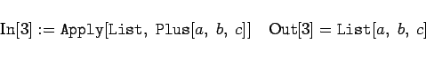

Es sei f eine Funktion, die im Zusammenhang mit einer Liste erklärt ist. Dann ergibt
| (20.24) |
| Beispiel |
|
Man erkennt hier gut das allgemeine Schema, wie Mathematica mit Ausdrücken von Ausdrük-kcken umgeht. Dazu schreibt man die letzte Operation in 
|